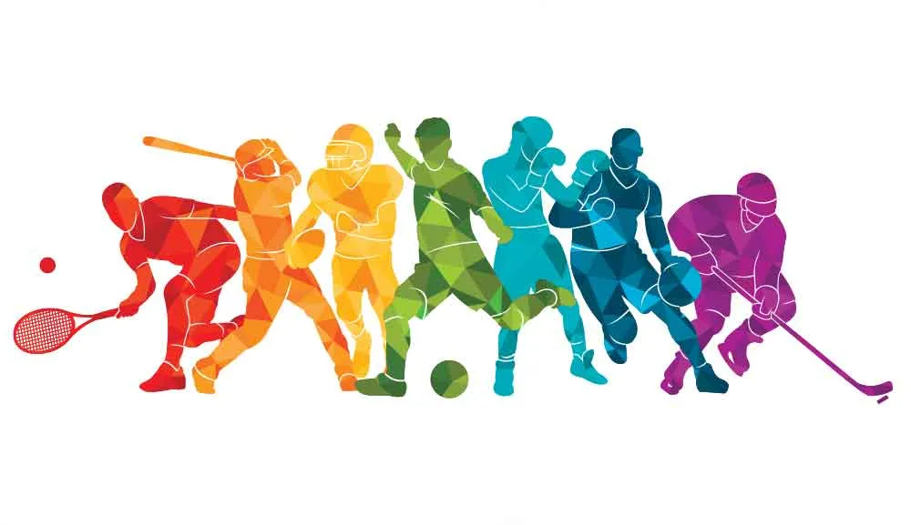

El fútbol americano es un deporte en el que la fuerza, la estrategia y la determinación se combinan en un campo de batalla de 100 yardas. Cada jugada es una coreografía de movimientos calculados y ejecuciones precisas, donde el objetivo es avanzar hacia la zona de anotación mientras se defiende ferozmente.
El fútbol americano no es solo un deporte; es una parte integral de la cultura en muchas comunidades. Los aficionados muestran una lealtad inquebrantable a sus equipos, vistiendo colores y símbolos con orgullo. Los estadios se llenan con el rugido de la multitud, creando una atmósfera eléctrica que eleva la experiencia del juego a otro nivel.
El fútbol americano enseña valores fundamentales como el trabajo en equipo, la disciplina y la perseverancia. Los jugadores se preparan física y mentalmente para enfrentar el desafío del campo de juego, demostrando que el éxito en este deporte requiere sacrificio y dedicación constante.